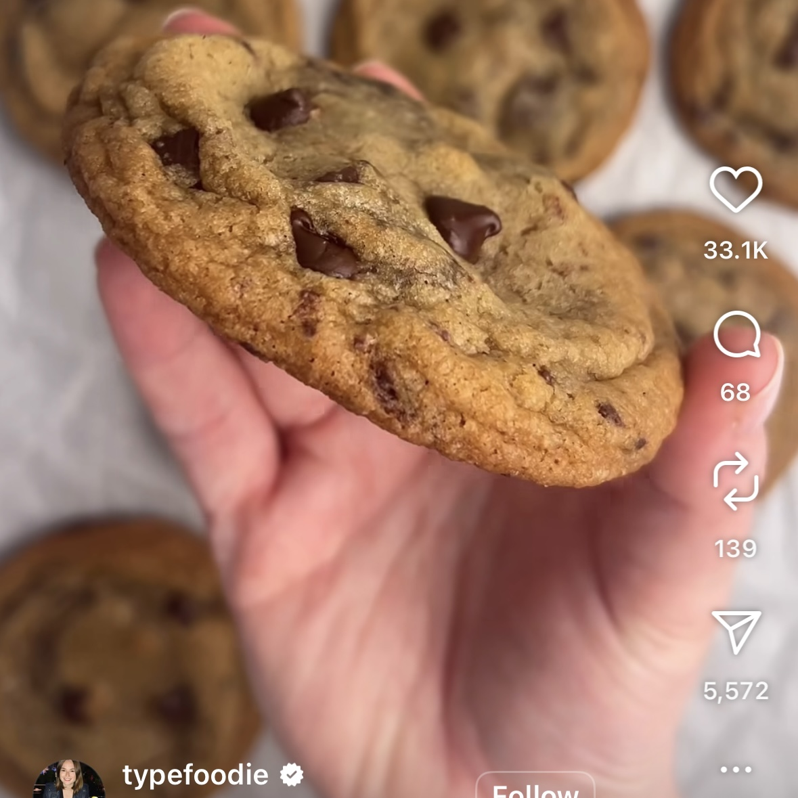
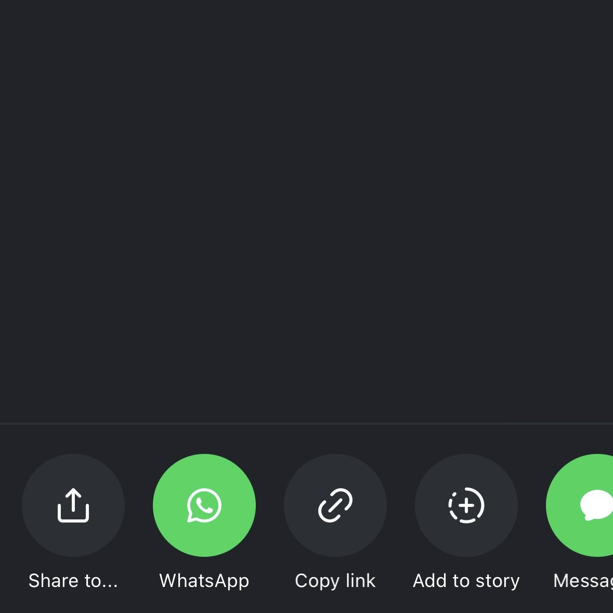
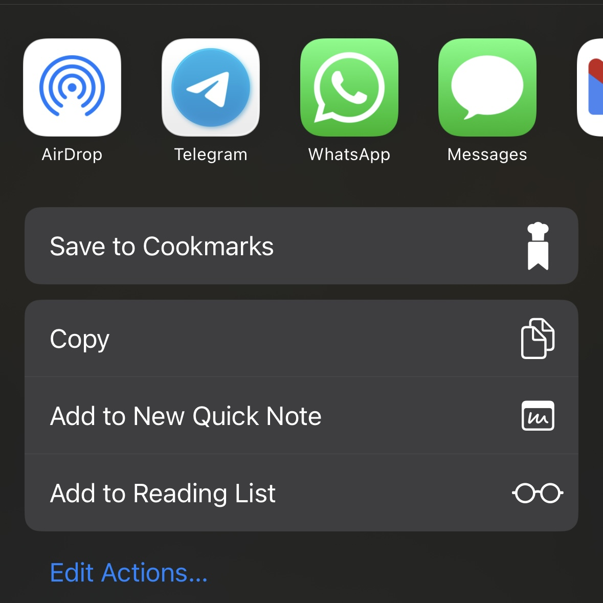

1
Find Your Recipe Post/Reel
On any Instagram post or reel, tap on the 'Share' button.

2
Open the Share Options
In the bottom left hand side, tap on the 'Share to' button.

3
Save to Cookmarks
Swipe up to expand the share sheet, then tap 'Save to Cookmarks'.
